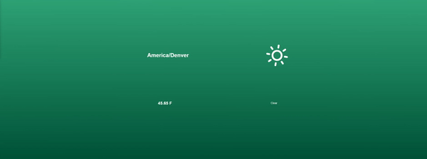
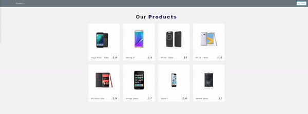

About

Web developer, specializing in data-driven functionality & client-side browser scripting. Works best in fast-paced environments as part of the team or flying solo. Believes good project management should be built into every endeavor. Comfortable with marketing, event planning, business strategy, networking & supervisory work within a corporate business environment. A forever student.
History
-
Eventus
- -
NIFA
- -
FHS / Transunion
- -
Return Path
- -
Corporate Express / Staples
-Convergys Corporation
--
Web engineer consultant. Minor architecture or scrum when needed.
Developed language agnostic
Developed on SalesForce, Oracle Rightnow, and AWS
Remote work for multiple fortune 500 companies
- Web engineer. HTML/CSS/PHP/Jquery/Adobe Suites. Maintained the company’s website and databases. Managed/Designed marketing ad campaigns - Social Media Maintained network hardware/software Maintained all IT issues.
- Healthcare environments with primary skill on database development and administration with SQL Server Experience with SQL Server and T-SQL in constructing triggers, tables, user defined functions, views, indexes,Stored Procedures, relational database models, data dictionaries, and data integrity Assisted in cross platform implementation of Python and RoR applications Expertise in SSIS (Integration services), SSAS (Analysis services) , SSRS, BIDS
- Projects ranged from bite-sized feature development projects to large operational undertakings, such as building the systems that enable us to deliver fast, scalable and reliable services to clients. Participated in the company wide Hack-A-Thon, built an application that is used in onboarding for that company
- WFM Scheduler for all Corporate Express call centers across the US Transitioned software skill set to handle Cisco, Blue Pumpkin WFP Tool, eGain, Witness Quality tools and SalesForce admin certification. Strong point of contact for Staples' upper management in understanding call center dynamics.
- Reports Analyst, WFM Scheduler, and Team Supervisor to 24 direct reports.
Projects
Miscareted Judgement Day
A social platform I built myself. I created a game server to play a game and since I wanted other to play and take part of my community server, this was my effort to improve that community
Quick Builds
Javascript Weather App
A weather web application that tells you the time and weather for your geolocation. Of course, you will need to accept the alert from google in order for it to work.
Laravel & Vue Social Media
description
React Paypal Ecommerce
Contact
If you would like to reach me about possible work on your next project please send me your name, email address, and a brief synopsis below. I will get back to you at my earlist convenience.